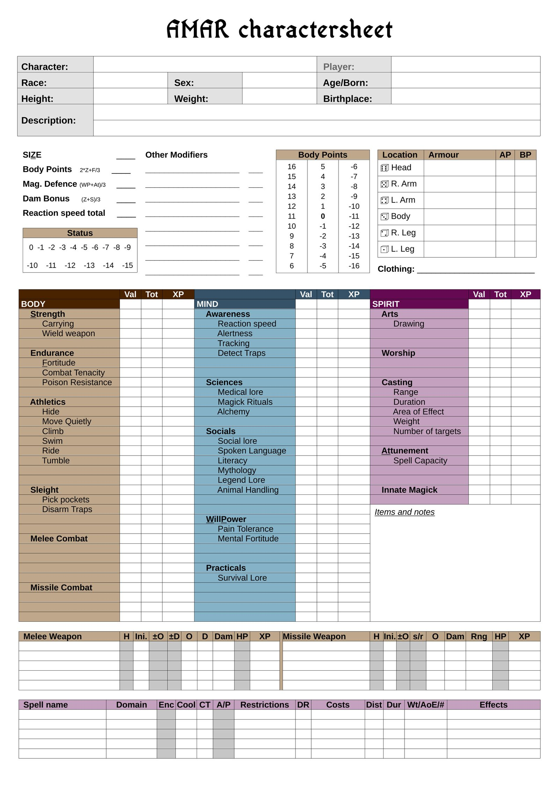

To describe a character in Amar RPG, we use Characteristics, Attributes, and Skills - three hierarchical tiers that build upon each other.


The Three-Tier System
Amar RPG organizes all character abilities into three tiers:
- Characteristics (Tier 1): The fundamental nature of a being: BODY, MIND, and SPIRIT
- Attributes (Tier 2): Grouped abilities under each characteristic (e.g., Strength, Melee Combat, Intelligence, Casting)
- Skills (Tier 3): Specific trained abilities under each attribute (e.g., Climb, Problem Solving, Literacy)
The Characteristics
BODY
The physical nature of the character's body - strength, endurance, agility.
Attributes under BODY:
- Strength - Physical power and lifting capability
- Skills: Carrying, Weight Lifting, Wield Weapon
- Endurance - Physical resilience and stamina
- Skills: Fortitude, Combat Tenacity, Running, Poison Resistance
- Athletics - Coordination and physical movement
- Skills: Hide, Move Quietly, Climb, Swim, Ride, Jump, Balance, Tumble
- Melee Combat - Close-quarters fighting
- Skills: Specific weapons/combinations
- Missile Combat - Ranged weaponry
- Skills: Specific weapons
- Sleight - Fine motor skills and dexterity
- Skills: Pick Pockets, Stage Magic, Disarm Traps
MIND
The mental capabilities of the character - intelligence, knowledge, awareness, and willpower.
Attributes under MIND:
- Intelligence - Reasoning and problem-solving
- Skills: Innovation, Problem Solving
- Nature Knowledge - Understanding of natural world and magic
- Skills: Medical Lore, Plant Lore, Animal Lore, Animal Handling, Magick Rituals, Alchemy
- Social Knowledge - Cultural and linguistic understanding
- Skills: Social Lore, Spoken Language, Literacy, Mythology, Legend Lore
- Practical Knowledge - Applied survival and craft skills
- Skills: Survival Lore, Set Traps, Ambush, Crafting skills
- Awareness - Perception and awareness of one's surroundings
- Skills: Reaction Speed, Alertness, Tracking, Detect Traps, Sense Emotions, Sense Ambush, Sense of Direction, Sense Magick, Listening
- Willpower - Mental fortitude and determination
- Skills: Pain Tolerance, Courage, Hold Breath, Mental Fortitude
SPIRIT
The magical and spiritual nature of the character - spellcasting ability and divine connection.
Attributes under SPIRIT:
- Casting - Magical manipulation of spells
- Skills: Range, Duration, Area of Effect, Weight, Number of Targets
- Attunement - Elemental and magical resonance
- Skills: Self, Fire, Water, Air, Earth, Life, Death, etc.
- Innate - Inborn magical abilities
- Skills: Flying, Camouflage, Shape Shifting, race-specific abilities
- Worship - Connection to deities and entities
- Skills: Specific Gods and major entities
Numbers and Ratings
The general description of the character such as appearance, weight and height is determined freely by the player. The GM may wish to exclude extremes.
The characteristics, attributes, and skills of a character are rated by numbers. Human potential varies by tier:
- Characteristics: 0-3
- Attributes: 0-5
- Skills: 0-8+
The mean human value is 1 for characteristics, 2 for attributes (ages 15-30).
SIZE remains a special attribute determined from weight (not purchased with points):
| Size | Kgs | Size | Kgs | Size | Kgs |
|---|---|---|---|---|---|
| ½ | < 10 | 6 | < 300 | 12 | < 1000 |
| 1 | < 20 | 7 | < 400 | 13 | < 1150 |
| 2 | < 50 | 8 | < 500 | 14 | < 1300 |
| 3 | < 100 | 9 | < 600 | 15 | < 1450 |
| 4 | < 150 | 10 | < 725 | 16 | < 1600 |
| 5 | < 225 | 11 | < 850 | +1 | +200 |
Optional Rule: Half-Size Points
For more granular size representation, GMs may use half-size increments between the standard SIZE values. This provides finer detail for creatures and characters whose weight falls between the standard thresholds.
| Size | Weight (kg) | Size | Weight (kg) | Size | Weight (kg) |
|---|---|---|---|---|---|
| 0.5 | < 10 | 3.5 | 75-99 | 6.5 | 263-299 |
| 1 | 10-14 | 4 | 100-124 | 7 | 300-349 |
| 1.5 | 15-19 | 4.5 | 125-149 | 7.5 | 350-399 |
| 2 | 20-34 | 5 | 150-187 | 8 | 400-449 |
| 2.5 | 35-49 | 5.5 | 188-224 | 8.5 | 450-499 |
| 3 | 50-74 | 6 | 225-262 |
Note: This optional system is used in the Amar RPG online tools for precise NPC generation.
To get an idea of skill ratings:
| Skill | Description |
|---|---|
| 0 | Untrained |
| 1 | Novice |
| 2 | Trained some |
| 4 | Competent |
| 5 | Well trained |
| 7 | Professional |
| 12 | Master |
| 16 | Legendary |
Making a Character
To create a new character, use the following starting values:
Characteristics: Choose to start with 1 in two characteristics, 0 in the third
- Example: BODY 1, MIND 1, SPIRIT 0
Attributes: Distribute these values: 3, 2, 2, 1, 1, 1
- Assign them to attributes under your chosen characteristics
- Example with BODY 1, MIND 1: Strength 3, Endurance 2, Intelligence 2, Awareness 1, Willpower 1, Athletics 1
Skills: Distribute these values: 3, 2, 2, 2, 1, 1, 1, 1, 1
- All characters start with 2 in Spoken Language (native tongue) - add any skill points on top of this
- Example: Climb 3, Carrying 2, Fortitude 2, Problem Solving 2, Reaction Speed 1, Running 1, Literacy 1, Tracking 1, Swim 1, plus Spoken Language 2 (base)
Total Skills
When we talk about the total value for a skill, we mean: The Skill value pluss its corresponding Attribute value and its corresponding Characteristic value.
- Example: The total in Fortitude would be the PC's value in Fortitude + Endurance + BODY
- Example: The total in Dodge would be Dodge + Athletics + BODY
- Example: The total in Reaction Speed = Reaction Speed + Awareness + MIND
If a character has MIND of 2, Awareness of 1 and Reaction Speed of 0, the total for Reaction Speed would be 3.
We always use the total Skill value for rolls. Never the Attribute or the Characteristic. Success is determined by the total Skill pluss a dice roll.
Character Sheets
To make and record a character, use the Character Sheet. Mark training and experience with a pencil.
Advancement System
Amar RPG uses a marks-based advancement where progress cascades upward through the tiers.
Gaining Marks
Skills gain marks through use and training:
- 1 mark for attempting a skill where a dice roll of 1 or more is required
- 2 marks for five consecutive attempts at using a skill
- Training with a teacher (one week): 2 marks
- Training without a teacher (one week): 1 mark for BODY skills, ½ mark for MIND/SPIRIT skills
Attributes gain marks from skill advancement:
- When a skill increases a level, it gives 1 mark to its parent attribute
- Training: Half the rate of skills (1 mark with teacher, ½ mark solo for BODY, ¼ for MIND/SPIRIT)
Characteristics gain marks from attribute advancement:
- When an attribute increases a level, it gives 1 mark to its parent characteristic
- Training: Half the rate of attributes
Mark Conversion
You can convert 3 marks at one tier to 1 mark at the tier above:
- 3 skill marks = 1 attribute mark
- 3 attribute marks = 1 characteristic mark
Advancing to Next Level
To advance from level N to the next level (N+1):
- Requires 5 × (N+1) marks
- Example: Going from 4 to 5 in Climb requires 5 × 5 = 25 marks
- When marks are reached, roll d6 - you must roll 2 or higher to advance (roll all but a 1)
Key Modifiers
These derived values are calculated:
Body Points (BP): SIZE × 2 + Fortitude/3
- Wounded (½ BP): -2 to all rolls
- Heavily Wounded (¼ BP): -4 to all rolls
- 0 BP: Helpless
- Negative BP: Unconscious
- Minus total BP: Dead
- Bleeding: Roll d6 every minute. On 1, lose 1 BP
Damage Bonus (DB): (SIZE + Wield Weapon)/3
Magick Defense (MD): (Mental Fortitude + Attunement Self)/3
Encumbrance
Based on Carrying skill (under BODY → Strength):
- Up to 2 × Carrying value: No penalty
- Up to 5 × Carrying value: -1 penalty
- Up to 10 × Carrying value: -3 penalty
- Up to 20 × Carrying value: -5 penalty
- Swimming: All weight multiplied by 5
Fear and Courage
Fear checks use the total Courage skill (under MIND → Willpower).
Roll Courage + d6 vs. the fear-inducing creature's DR:
- Success: No effect
- Failure by 1: -1 to actions this round
- Failure by 2: -1 to actions for two rounds
- Failure by 3: -1 to actions for three rounds
- Failure by 4: Frozen for 1 round
- Failure by 5+: Flee in panic
- Critical Failure: Heart attack (Endurance check or unconscious)
Roll each round in presence of fear source until Success. A negative effects are cumulative.
Skill Rolls
The core mechanic uses the O6 (Open d6) system: d6 + Attribute + Skill vs. DR
O6 Rolling Procedure:
- Roll a d6
- On a 6: Continue rolling. As long as you roll 4, 5, or 6, add +1 to your total. Stop when you roll 1, 2, or 3
- On a 1: Continue rolling. As long as you roll 1, 2, or 3, subtract 1 from your total. Stop when you roll 4, 5, or 6
- Two consecutive 6s: Critical success (can occur during the extended roll)
- Two consecutive 1s: Fumble (can occur during the extended roll)
Example O6 Rolls:
- Roll: 1, 1, 5 = 0 & Fumble
- Roll: 1, 5 = 1
- Roll: 1, 2, 2, 3, 2, 1, 2, 4 = -5
- Roll: 2 = 2
- Roll: 6, 2 = 6
- Roll: 6, 5, 1 = 7
- Roll: 6, 6, 5, 2 = 8 & Critical
- Roll: 6, 4, 4, 6, 5, 2 = 10
Complete Skill Check:
When making a skill check, roll: O6 + Total Skill vs DR
Example: Climbing a cliff (DR 8) with BODY 1, Athletics 2 and Climb 3
- Roll O6: 6, 5, 2 = 7
- Total: 7 + 2 (Athletics) + 3 (Climb) + 1 (BODY) = 13
- Result: Success (13 ≥ 8)
Skill Criticals and Fumbles
Combat has its own Critical and Fumble tables (see Combat), and spell casting has its own (see Incantation Magic). For any other skill roll — Reaction Speed, Swim, Alertness, anything — use the simple one-roll tables below. On a Critical (two consecutive 6s) or a Fumble (two consecutive 1s), roll a single d6.
Skill Criticals
| d6 | Result |
|---|---|
| 1 | Cool — it looks effortless; onlookers are impressed |
| 2 | Fast — done in half the time |
| 3 | Frugal — costs nothing extra: no fatigue, no wear on gear |
| 4 | Better — the result is one grade better than asked |
| 5 | Inspired — +3 on your next related roll |
| 6 | Perfect — one grade better AND add one experience mark |
Skill Fumbles
| d6 | Result |
|---|---|
| 1 | Slow — takes double time before the failure shows |
| 2 | Drop — drop or damage what you are holding or using |
| 3 | Strain — -1 on all rolls until you rest |
| 4 | Worse — the situation gets one grade worse (GM's discretion) |
| 5 | Exposed — the failure invites danger at the worst moment (GM) |
| 6 | Botched — as 4, and subtract one experience mark |
Playable Races
See the race pages for racial modifiers:
- Human - Balanced, 2 bonus skill points
- Elf - +1 SPIRIT characteristic
- Dwarf - +1 BODY characteristic
- Others - See individual race pages
See Also
- Magick - The magick system
- Incantation Magic: incantation rules
- Playable Races: race options and modifiers